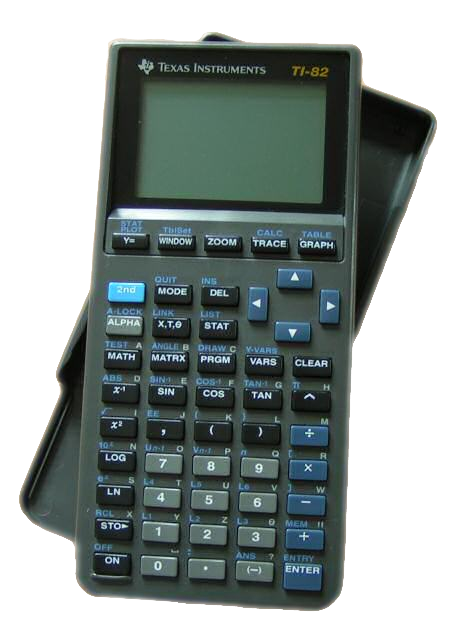
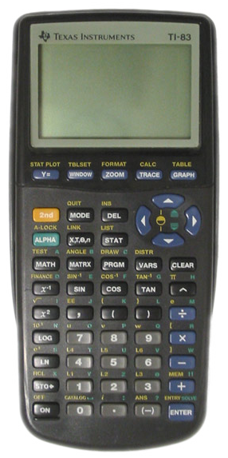
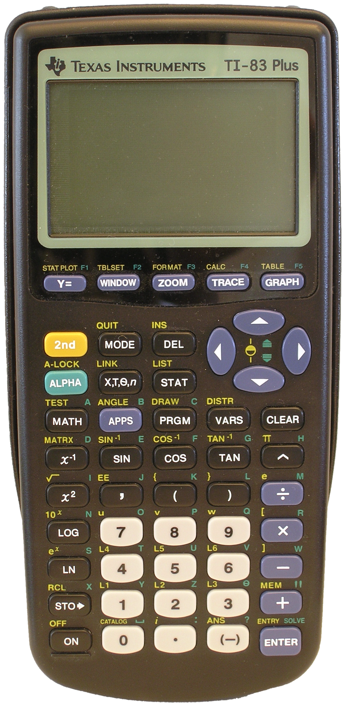
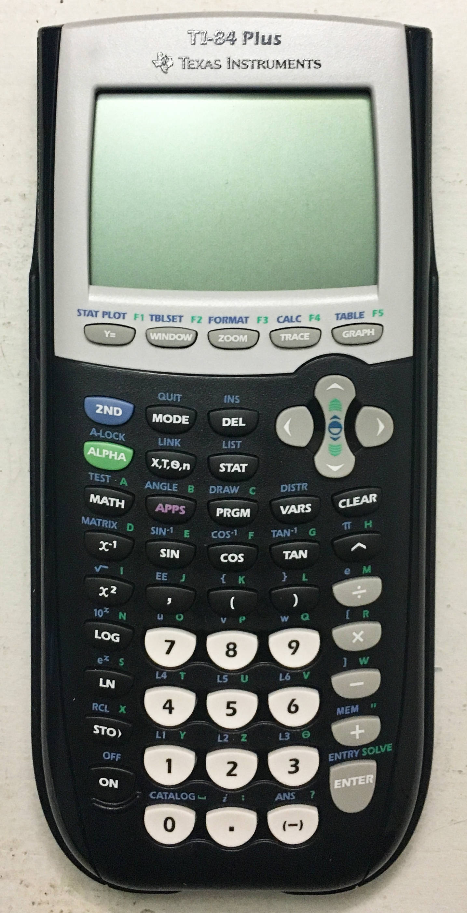
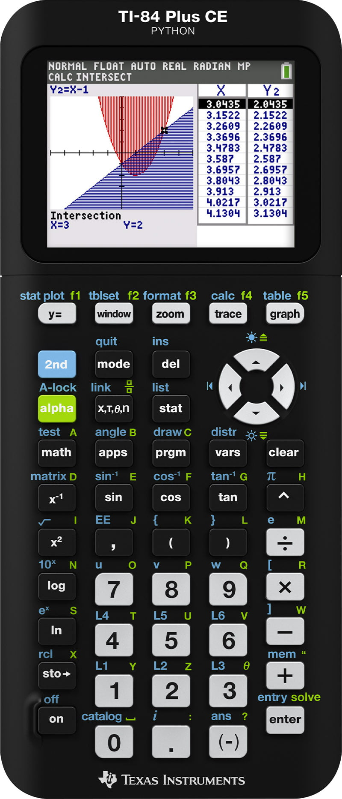

loading header...
Calculator Programs
This is where you can find programs and games I've written for calculators.





| Program | Platform | Description |
|---|---|---|
| TimeCALC | TI-82, TI-83 | A simple time conversion program for TI graphing calculators. |
| DisplayCharacter82 | TI-82 | A TI-82 assembly program that lets you cycle through all 256 characters in the character set of the TI-82 |
| TIDICE | TI-82, TI-83, TI-83+, TI-84+, TI-84+ CE | A 6-sided die probability program written in TI-BASIC |
| Guess Number ICE | TI-84+ CE | This is a number guessing game for the TI-84 Plus CE that I wrote using the ICE Compiler |
The programs written in TI-Basic should run on any calculator that supports TI-Basic programs. The text may appear wonky due to differences in screen size between different calculators.
This page was last updated on September 30, 2026.
"TI-82" is licensed under CC BY-SA 3.0 

 .
.
"TI-83" is licensed under CC BY-SA 3.0 

 .
.
"TI-83+" by Mschel is licensed under CC BY-SA 3.0 

 .
.
"TI-84 Plus front" by Kevauto is licensed under CC BY-SA 4.0 

 .
.
"TI 84 Plus CE Python" by OmegaAOL is licensed under CC BY-SA 4.0 

 .
.
The background of this page is "Bricks tiled texture 64x64" by alpha_rats, which is licensed under CC-BY-3.0